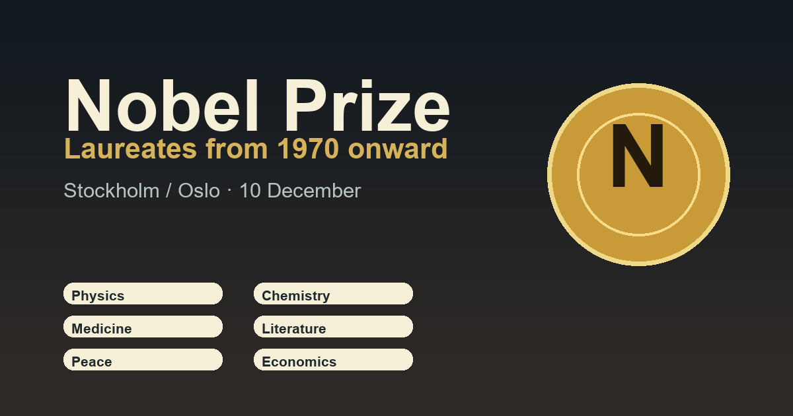

Technology & Science / Awards
Nobel Prize
A compact Nobel archive for comparing laureates by year and prize category. The table starts at 1970 and includes Physics, Chemistry, Medicine, Literature, Peace and Economic Sciences.
Main ceremony
10 Dec in Stockholm
Most Nobel Prizes are awarded in  Sweden; the Peace Prize ceremony is held in
Sweden; the Peace Prize ceremony is held in  Norway.
Norway.
 More awards
Technology & Science Awards
More awards
Technology & Science Awards
Science prizes, research recognition and invention milestones.
Nobel winners per year
Choose prize categories. Years are shown as rows.
Facts
Nobel Prize context
Useful framing for the annual announcements and December ceremonies.
LoadingNobel Prize records are loading.
Nobel WeekWhere the ceremonies happen
StockholmStockholm
Prize lectures, Nobel Week Lights and the main 10 Dec award ceremony focus around the Swedish capital.